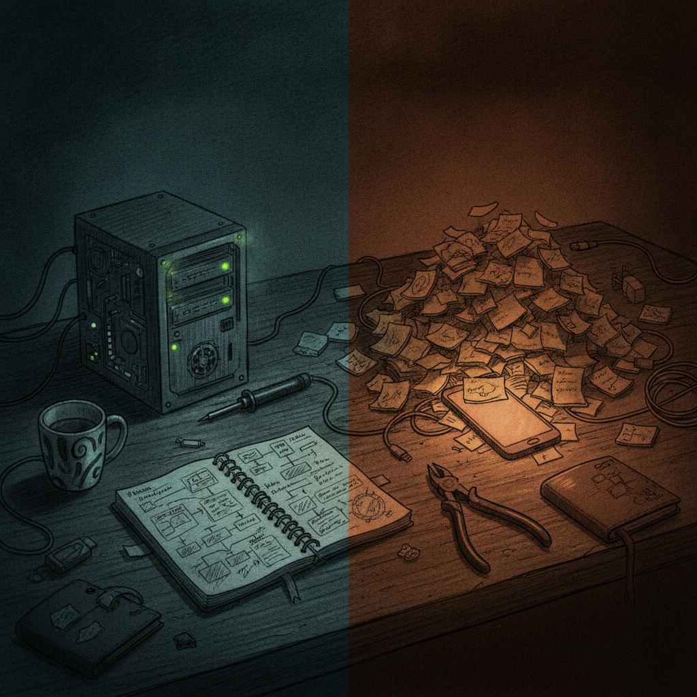

Why a Joke About Selling Everything Says a Lot About a Community
I stopped scrolling on this one because it made me laugh, and because it is a pretty accurate snapshot of what crypto Twitter culture actually looks like day to day. Not the polished threads. Not the roadmap hype. Just someone being funny about how easy it is to shitpost instead of build.
What was bookmarked
@bytesandblocks posted a short, sarcastic message saying that shitposting and fudding is easier and more fun than everything else, then told people to sell their $XCH and their $BEPE because it is all going to zero, punctuated with a wall of laughing emojis. There is no chart, no argument, no real claim being made. It reads exactly like what it is: a joke about how loud, dramatic negativity gets more attention online than quiet, steady work.

Why it matters
Every crypto community has a running joke like this one. People post exaggerated doom, tag their own project's ticker, and everyone in the replies knows it is a bit. It is a coping mechanism and a bonding ritual at the same time. For a smaller ecosystem like Chia, humor like this actually says something healthy: people are comfortable enough with each other to joke about the worst case instead of pretending everything is always up and to the right.
It also pokes at something real. Shitposting genuinely is easier than building, documenting, or shipping. The joke lands because everyone who has tried to do real work in this space knows that tension.
The practical breakdown
What it does: functions as community humor, not financial commentary. It lightens the mood and pokes fun at FUD culture instead of adding to it in a mean-spirited way.
Who it helps: anyone who has felt the pull to spend an hour ranting online instead of an hour actually working. It is a mirror, not advice.
Why builders should care: it is a reminder that attention online rewards outrage and jokes faster than it rewards steady progress. Knowing that is useful when you are deciding where to spend your own energy.
What problem it solves: nothing directly, and that is fine. Not every bookmark needs to be a tool or a workflow. Some of them are just a good read on the room.
What still needs work: nothing to build here, this is a joke, not a project.
Rick's take
I like this one because it is honest in a way that a lot of crypto content is not. Nobody is pretending everything is perfect, and nobody is actually telling people to sell anything. It is just someone in the Chia orbit being funny about how loud negativity travels faster than quiet building, which is true everywhere, not just here.
I have always appreciated that the people around Chia can joke about the rough patches without it turning bitter. That is a sign of a community that has been through enough cycles to laugh at itself instead of panicking. I do not know the full context behind $BEPE beyond it being a ticker referenced alongside $XCH here, but the joke does not depend on knowing that detail to land.
What to watch next
Nothing to track here in terms of price or roadmap, this was not that kind of post. What is worth watching is the tone of a community over time. Communities that can joke about their own worst case tend to stick around longer than ones that either deny problems exist or spiral every time someone posts something dramatic. Small moments like this are a decent read on which kind of community you are actually in.
Source and links
Source: X post by @bytesandblocks, https://x.com/i/web/status/2076926349483074046, retrieved on 2026-07-14. No external references included in the source post.